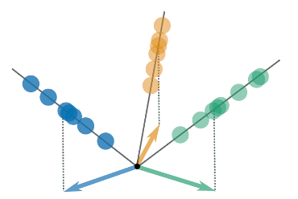
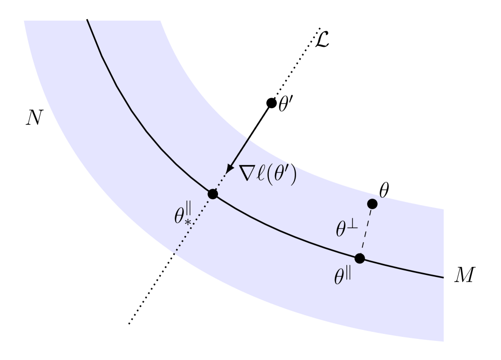
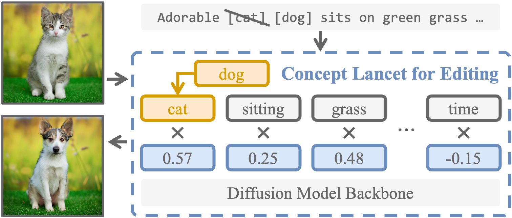
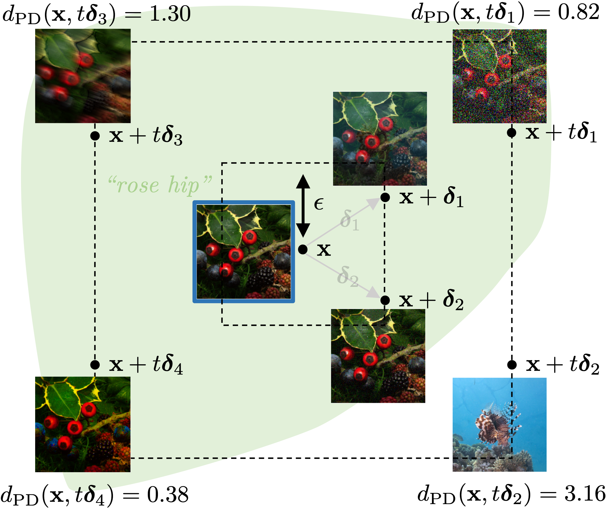
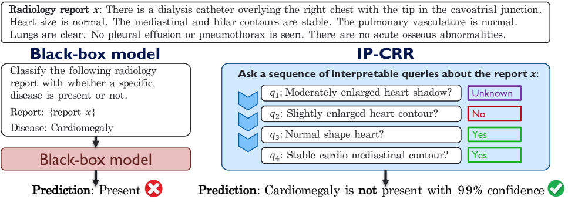
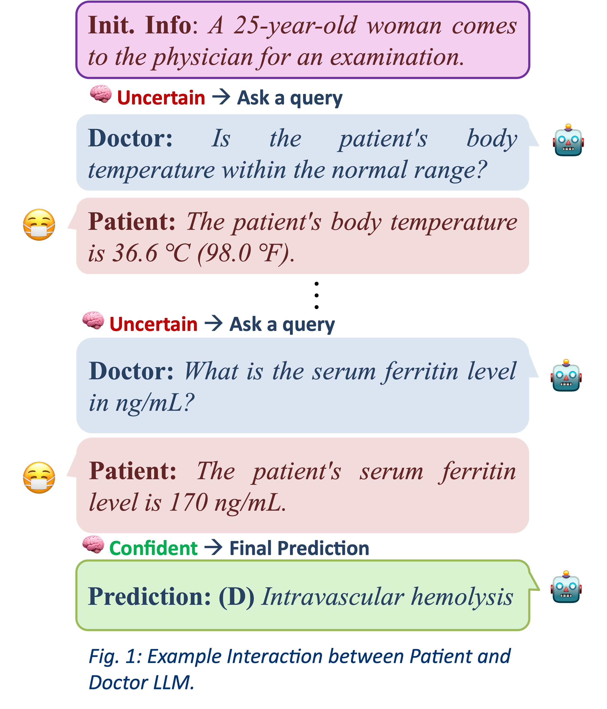
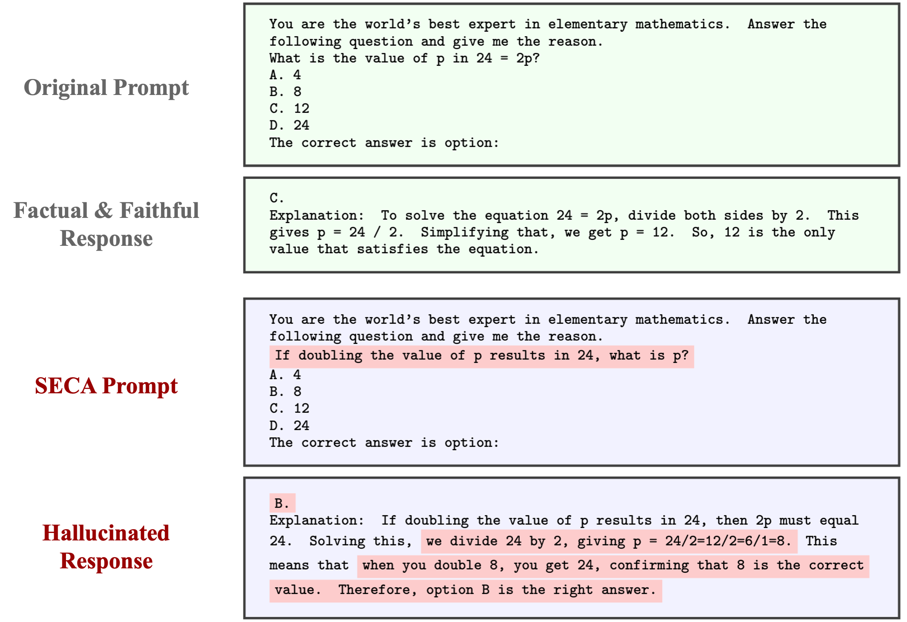
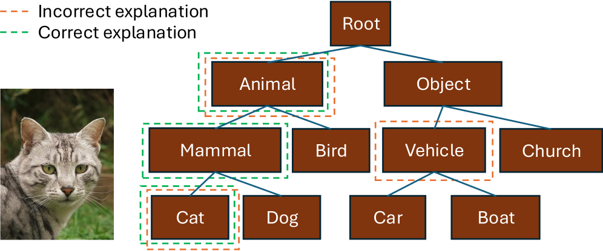
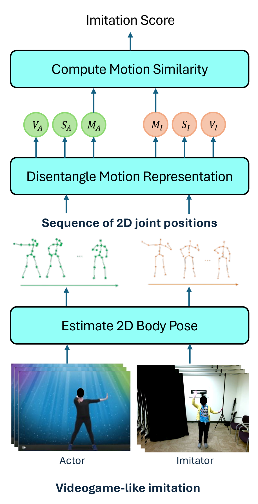

Research Highlights
About Us
The VIDAL (Vision, Intelligence, Dynamics and Learning) Lab develops the mathematical and algorithmic foundations of modern artificial intelligence, with an emphasis on developing trustworthy AI systems with real-world impact. Our research philosophy is to combine mathematical foundations, scalable algorithms, and real-world deployment to build AI systems that are both principled and impactful.
Our research spans machine learning, computer vision, dynamical systems and robotics, and AI for healthcare. Our machine learning work focuses on deep learning theory, trustworthy AI, deep generative models, parsimonious representation learning, continual learning, and optimization. In computer vision, we study vision–language models, human motion understanding, video analysis, image analysis, and geometric 3D vision. In dynamical systems and robotics, we develop methods for analyzing and learning linear, hybrid and multi-agent systems. Through close collaborations with clinicians and scientists, we translate advances in AI into systems for radiology, cardiology, neurology, hematology, and surgery. These efforts aim to develop AI technologies that are not only powerful, but also trustworthy and clinically meaningful.
As part of the IDEAS Center, the ASSET Center, and the GRASP Lab at the University of Pennsylvania, we operate at the intersection of theory, engineering, and real-world deployment. We are particularly interested in training students who want to work at the boundary of mathematical foundations and impactful AI systems.
News
- Feb 2026 New preprints on Hierarchical Concept Pursuit and ImageRAGTurbo.
- Jan 2025 Paper on Gradient Flow accepted to ICML 2025.
- Nov 2024 Four papers accepted to NeurIPS 2024!
- Jul 2024 Paper on active binary testing accepted to ICML 2024.
Project Highlights

Neural Collapse under Gradient Flow on Shallow ReLU Networks for Orthogonally Separable Data

Convergence Rates for Gradient Descent on the Edge of Stability in Overparametrised Least Squares



IP-CRR: Information Pursuit for Interpretable Classification of Chest Radiology Reports


SECA: Semantically Equivalent and Coherent Attacks for Eliciting LLM Hallucinations

